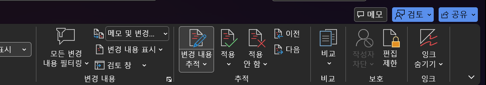
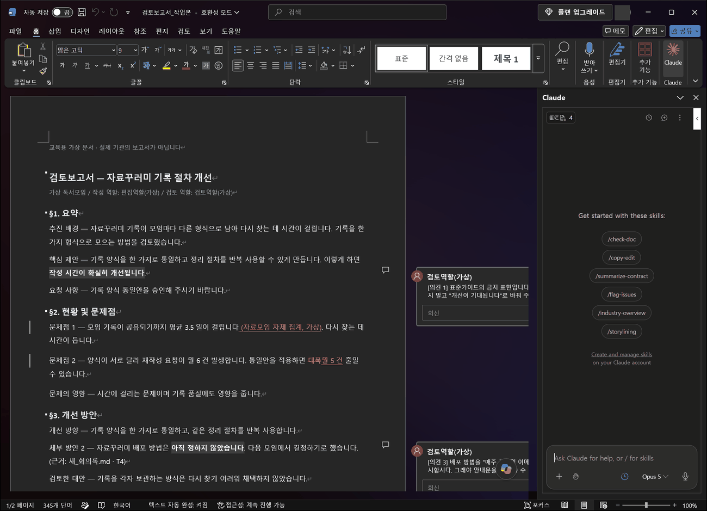
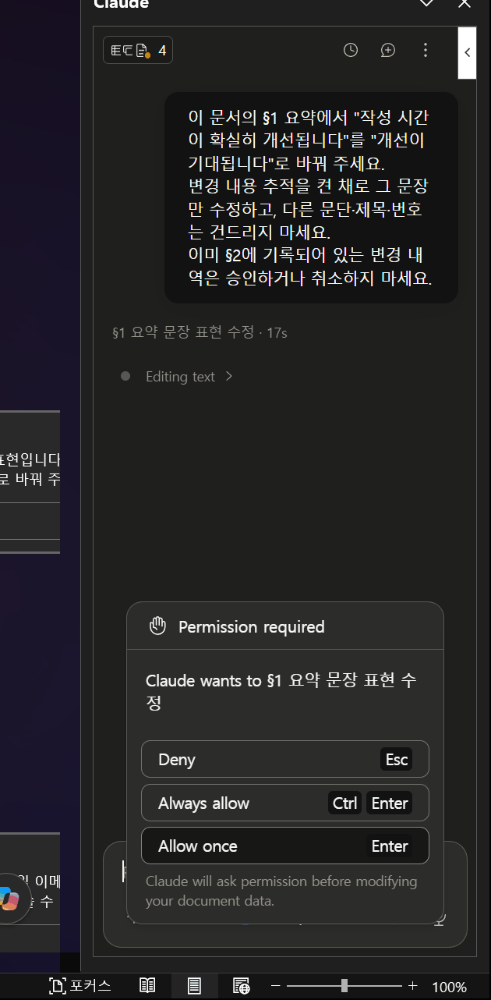
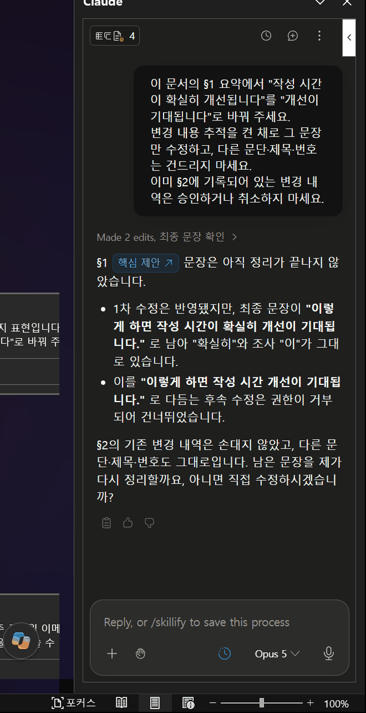
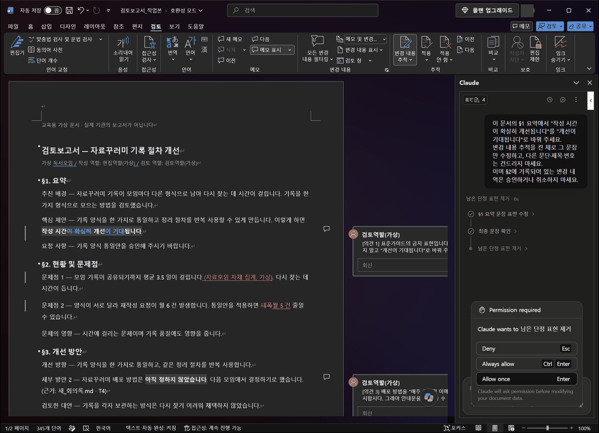
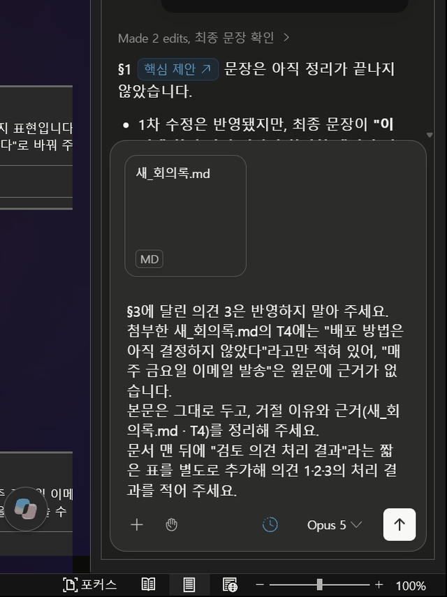
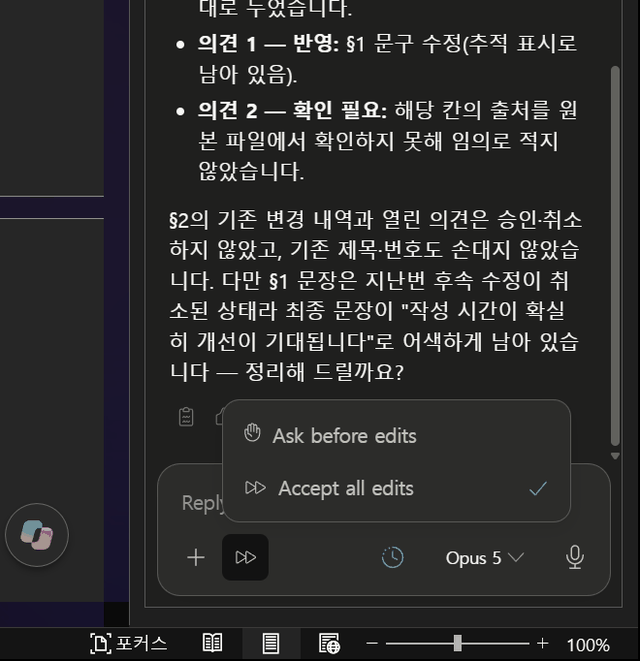
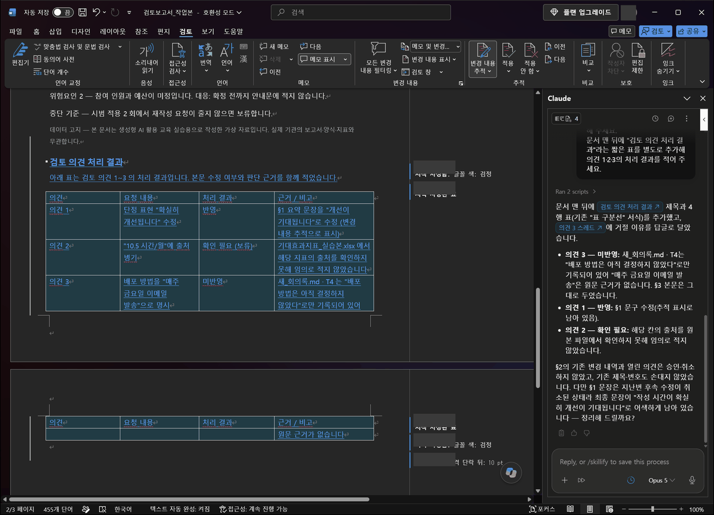

"이렇게 바꾸는 게 어떨까요"
본문 옆에 붙는 말입니다. 문서 내용은 아직 그대로입니다.
댓글을 "해결"로 표시해도 본문은 바뀌지 않습니다.
의견이 세 개 달린 보고서 초안을 받습니다. 둘은 반영하고 하나는 원문 근거를 들어 거절합니다. 그다음에는 초안 없이 회의록만으로 6섹션 보고서를 여러분이 구성해 만들고, 추가 검토 요청에 보류·질문·거절로 대응합니다.
검토 의견이 세 개 달린 보고서 초안을 받습니다. 그중 둘은 반영하고 하나는 거절합니다. 거절에는 원문 근거를 답니다.
| 의견 | 무엇을 지적했나 | 어떻게 처리하나 | 왜 |
|---|---|---|---|
| 의견 1 | "확실히 개선됩니다"는 단정 표현이니 바꿔 달라 | 반영 | 문서작성 표준가이드에 금지 표현으로 적혀 있습니다 |
| 의견 2 | 표의 수치에 출처 표기가 없다 | 반영 | 출처가 실제로 빠져 있고, 어느 표의 어느 지표인지 확인할 수 있습니다 |
| 의견 3 | 배포 방법을 "매주 금요일 이메일 발송"으로 명시하자 | 거절 | 원본 회의록에 배포 방법이 아직 결정되지 않았다고만 적혀 있습니다 |
본문 옆에 붙는 말입니다. 문서 내용은 아직 그대로입니다.
댓글을 "해결"로 표시해도 본문은 바뀌지 않습니다.
본문의 수정 자체를 기록한 것입니다. 무엇이 지워지고 무엇이 들어왔는지 남습니다.
검토 → 변경 내용에서 하나씩 승인하거나 취소할 수 있습니다.
댓글을 해결 표시하는 것과 본문을 고치는 것을 같은 일로 여기면, 지적은 닫혔는데 문서는 그대로인 상태가 됩니다. 이번 실습에서 그 둘을 나눠서 확인합니다.
| 구분 | 무엇인가 | 이 문서에서 | 건드리나 |
|---|---|---|---|
| 섹션 구조 | §1~§6으로 고정된 여섯 개 항목과 그 순서 | §1 요약 ~ §6 위험요인 | 바꾸지 않습니다. 추가·삭제·순서 변경 금지 |
| 스타일 | 제목1·제목2처럼 문단에 붙은 서식 이름 | § 제목들이 제목2 스타일 | 바꾸지 않습니다 |
| 검토 의견 | 본문 옆에 달린 댓글 3개 | §1 · §5 표 · §3에 하나씩 | 처리 대상입니다 |
| 변경 내역 | 이미 기록된 수정 이력. "추적 설정이 켜져 있다"와 "기록이 실제로 남았다"는 다른 것입니다(03단계 4번) | §2에 삽입 2건 · 삭제 1건 | 건드리지 않습니다. 이번 과제가 아닙니다 |
| 보고 싶은 것 | 메뉴 | 보이는 것 |
|---|---|---|
| 검토 의견 | 검토 → 메모 표시 (또는 오른쪽 여백) | 말풍선 3개 |
| 변경 내역 | 검토 → 변경 내용 → 모든 표시 | 삽입은 밑줄, 삭제는 취소선 |
| 변경 내역 목록 | 검토 → 검토 창 | 수정 목록이 한 줄씩 |
| 스타일 | 홈 → 스타일 (문단을 클릭한 상태로) | 제목 1 / 제목 2 / 표준 |
Claude for Word 공식 문서(2026-09-15 확인)에는 이번 실습과 바로 이어지는 두 가지가 적혀 있습니다.
| 공식 문서의 설명 | 이번 실습에서는 |
|---|---|
| 변경 내용 추적 모드 — 수정이 개정 기록으로 남아 Word의 검토 창에서 하나씩 승인하거나 취소할 수 있습니다 | 04단계에서 추적을 켠 채로 수정하고, 검토 창에 기록이 남았는지 확인합니다 |
| 댓글 기반 편집 — 댓글 스레드를 읽고, 그 댓글이 가리키는 문단을 고친 뒤 무엇을 했는지 스레드에 회신할 수 있습니다 | 05단계에서 거절 이유를 댓글 회신 또는 별도 표로 남깁니다 |
| 선택 영역 편집 — 고른 문단만 고치고 주변 스타일·번호·서식은 유지합니다 | § 제목과 번호가 그대로인지 확인합니다 |
공식 문서는 외부에서 받은 문서(내려받은 양식, 상대방이 보낸 파일 등)의 본문·댓글·변경 내역·머리글에 숨은 지시문이 들어 있을 수 있다고 경고합니다. 이번 실습 문서는 우리가 만든 교육용 가상 문서입니다. 공식 안내 ↗
의견을 처리하려면 무엇을 기준으로 판단할지가 있어야 합니다. 그래서 초안만이 아니라 근거 자료도 같이 받습니다.
두 Knowledge 문서는 이전 교육에서 쓰던 교육용 가상 자료를 그대로 가져온 것입니다. 실제 기관의 규정이나 양식이 아닙니다.
검토 → 메모 표시를 켜고 말풍선 세 개를 읽습니다. 아직 아무것도 고치지 않습니다.
| 의견 | 달린 위치 | 내용 |
|---|---|---|
| 의견 1 | §1 요약 · "작성 시간이 확실히 개선됩니다" | 표준가이드의 금지 표현입니다. "개선이 기대됩니다"로 바꿔 주세요 |
| 의견 2 | §5 기대효과 표 · "10.5시간/월" 칸 | 이 수치에 출처 표기가 없습니다. 어느 파일의 어느 지표인지 병기해 주세요 |
| 의견 3 | §3 개선 방안 · "아직 정하지 않았습니다" | 배포 방법을 "매주 금요일 이메일 발송"으로 명시합시다 |
검토 → 변경 내용 → 모든 표시로 바꾸면 §2에 밑줄과 취소선이 보입니다.
| 위치 | 기록된 변경 | 종류 |
|---|---|---|
| §2 문제점 1 | "(자료모임 자체 집계, 가상)" 추가됨 | 삽입 |
| §2 문제점 2 | "대폭" 지워짐 | 삭제 |
| §2 문제점 2 | "월 5건" 추가됨 | 삽입 |
거절할 의견이므로 근거를 먼저 확인해 둡니다. 새_회의록.md를 메모장으로 열어 보세요.
[T4] 배포 방법은 아직 결정하지 않았다.
원본에는 이 한 줄뿐입니다. "매주 금요일"도 "이메일"도 없습니다. 검토자가 편의를 위해 제안한 것이지 결정된 사실이 아닙니다.
초안을 복사해 검토보고서_작업본.docx로 이름을 바꿉니다. 그리고 작업본에서 변경 내용 추적을 직접 켭니다.
버튼을 눌러 켜진 상태로 만듭니다.

이어서 로 패널을 엽니다. 왼쪽에 탐색 창이 열려 있으면 닫아야 댓글 여백이 보입니다.

| 구분 | 무엇인가 | 어디서 보나 | 이 실습에서 |
|---|---|---|---|
| ① 추적 설정 | "앞으로의 수정을 기록하라"는 문서에 저장되는 설정입니다(파일 안의 w:trackRevisions). 켠 채로 저장하면 다른 PC에서 열어도 켜진 채 열립니다 | 검토 → 변경 내용 추적 버튼 | 이 실습 파일은 일부러 꺼 둔 채 배포합니다. 여러분이 켜고, 켜졌는지 확인하는 것이 연습입니다 |
| ② 실제 변경 기록 | 설정이 켜진 뒤 실제로 남은 삽입·삭제 기록 | 검토 → 검토 창 (목록으로 셉니다) | 요청 뒤 기록이 늘었는지가 진짜 확인입니다. 설정이 켜져 있어도 기록이 안 남았으면 실패 |
| ③ 표시 모드 | 기록을 화면에 어떻게 보여 줄지(모든 표시 / 간단 표시 / 변경 내용 없음) | 검토 → 변경 내용 표시 | "간단 표시"면 밑줄·취소선이 안 보여도 기록은 남아 있습니다. 헷갈리면 "모든 표시"로 |
근거: Open XML 표준의 w:trackRevisions는 문서 설정(settings)에 저장되는 값이며, 2026-09-17 이 PC의 Word로 이 값을 넣은 사본을 열어 "추적 켜짐"으로 열리는 것을 확인했습니다. 다만 Claude가 어떤 방식으로 편집하느냐에 따라 기록이 남는지는 따로 확인해야 합니다 — 09-16 리허설에서는 패널 편집이 삽입·삭제로 기록됐습니다(04단계). 자료실 · Open XML 문서 참조
"의견 반영해 주세요"라고 한 번에 시키지 않습니다. 하나씩 처리해야 무엇이 어떻게 바뀌었는지 볼 수 있습니다.
이 문서의 §1 요약에서 "작성 시간이 확실히 개선됩니다"를 "개선이 기대됩니다"로 바꿔 주세요. 변경 내용 추적을 켠 채로 그 문장만 수정하고, 다른 문단·제목·번호는 건드리지 마세요. 이미 §2에 기록되어 있는 변경 내역은 승인하거나 취소하지 마세요.



이 의견은 "출처를 적어라"입니다. 어떤 출처를 적을지 사람이 알아야 합니다. 모듈 02에서 본 표의 지표 4가 그 근거입니다.
§5 기대효과 표에서 "10.5시간/월" 행의 출처 칸에 다음을 적어 주세요. 기대효과지표_실습본.xlsx · 지표 4 절감량 표의 다른 행과 수치는 그대로 두세요. 숫자를 반올림하거나 바꾸지 마세요. 변경 내용 추적은 켠 채로 진행해 주세요.
| 확인할 곳 | 무엇을 보나 | 통과 기준 |
|---|---|---|
| §1 요약 | 문장 표현 | "개선이 기대됩니다"로 바뀜 |
| 검토 → 검토 창 | 변경 목록 | 이번에 한 수정 2건이 새로 보임 |
| §2 문제점 1·2 | 기존 변경 내역 | 삽입 2 · 삭제 1이 그대로 |
| §5 표 | 출처 칸 | "기대효과지표_실습본.xlsx · 지표 4 절감량" |
| §5 표 | 숫자 | 18 · 7.5 · 10.5 그대로 |
| §1~§6 제목 | 섹션 구조 | 여섯 개, 번호와 순서 그대로 |
의견 3은 그럴듯합니다. 안내문을 쓰려면 배포 방법이 있어야 하니까요. 하지만 원본에 그런 결정이 없습니다.
이미 03단계에서 봤지만 한 번 더 확인합니다. 거절에는 근거가 필요하기 때문입니다.
| 의견이 말하는 것 | 원본에 실제로 있는 것 | 차이 |
|---|---|---|
| 배포 방법 = 매주 금요일 이메일 발송 | [T4] 배포 방법은 아직 결정하지 않았다. | 주기·수단 모두 원본에 없습니다 |
§3에 달린 의견 3은 반영하지 말아 주세요. 첨부한 새_회의록.md의 T4에는 "배포 방법은 아직 결정하지 않았다"라고만 적혀 있어, "매주 금요일 이메일 발송"은 원문에 근거가 없습니다. 본문은 그대로 두고, 거절 이유와 근거(새_회의록.md · T4)를 정리해 주세요. 문서 맨 뒤에 "검토 의견 처리 결과"라는 짧은 표를 별도로 추가해 의견 1·2·3의 처리 결과를 적어 주세요.

새_회의록.md를 붙이면 입력창 위에 MD 칩이 생깁니다. 칩이 없으면 첨부가 안 된 것입니다.

표에 아래 세 줄이 있어야 합니다. 표현은 달라도 되지만 처리 결과와 근거는 같아야 합니다.
| 의견 | 처리 | 근거 |
|---|---|---|
| 의견 1 · 금지 표현 | 반영 | Knowledge_01 문서작성 표준가이드 · 권장/금지 표현 |
| 의견 2 · 출처 누락 | 반영 | 기대효과지표_실습본.xlsx · 지표 4 절감량 = 10.5 |
| 의견 3 · 배포 방법 명시 | 거절 | 새_회의록.md · T4에 미결정으로만 기록됨 |
기준본에서 확인할 것: §1 문장이 "개선이 기대됩니다"이고, §5 표에 출처가 있고, §3은 그대로이며, 의견 3의 댓글이 아직 남아 있습니다.
기준본은 비교용으로 미리 만든 파일입니다. 실제 Claude 출력이 아니며, 처리 결과 표는 들어 있지 않습니다. 그 표는 여러분이 만드는 부분입니다.
04·05단계는 남이 쓴 초안에 의견을 처리했습니다. 이번에는 초안이 없습니다. 회의록만 있고, "운영 책임자에게 준비 현황과 결정할 것을 보고하라"는 요구만 있습니다. 양식(6섹션)은 정해져 있고, 무엇을 어느 섹션에 넣을지는 여러분이 정합니다.
준비물: 회의록_5개(01 단원), 새_회의록.md, Knowledge_02_검토보고서_표준양식_6섹션.docx(03단계에서 받음). 회의록 여섯 개를 메모장으로 훑고 아래 표를 채웁니다.
| 자료 | 무엇을 다루나 | 이 보고서의 근거로 쓰나 | 왜 |
|---|---|---|---|
| 01~05 회의록 5개 | 행사 안내문 준비(제목·초안·발송일·장소·사진·인원·예산) | 예 | 의뢰가 "행사 안내문 준비 현황" |
| 새_회의록.md | 자료꾸러미 배포 | 아니오 | T1에 "행사 안내문과 별개"라고 적혀 있음. 주제가 다른 자료를 섞으면 보고서에 엉뚱한 일정이 들어갑니다 |
| Knowledge_02 양식 | §1~§6 구조 | 양식으로 | 내용이 아니라 순서와 항목 이름만 가져옵니다 |
| 섹션 | 이 양식에서 넣는 것 | 이번 회의록에서 넣을 것 (여러분이 채웁니다) | 넣지 않을 것 |
|---|---|---|---|
| §1 요약 | 배경·현재 상태·요청 사항 세 줄 | 준비 배경(A1) · 현재 상태(B1–B3, E1) · 결정 요청(C1, D1, E2, E3) | 평가·각오 |
| §2 현황 및 문제점 | 사실과 문제 | 확정된 것 1문단 + 문제점 4개(발송일 충돌 · 장소 · 사진 · 인원·예산) | 원인 추측 |
| §3 개선 방안 | 원문에 기록된 진행 방식과 결정 요청 | 기록된 방식(A3, B3, D3) · 결정 요청 4가지 | 회의록에 없는 대안·권고 |
| §4 추진 일정 | 기록된 일정만 표로 | 발송 예정 두 기록 · 기한이 "기록 없음"인 항목들 | 만들어 넣은 날짜 |
| §5 기대효과 | 근거가 있을 때만 | 근거 없음 → "확인 필요"로 비워 둠 | 지어낸 수치 |
| §6 위험요인 및 대응 | 미정 항목이 무엇을 막는지 + 기록된 대응 | 발송일·사진·인원·예산 | 없는 대응책 |
§5가 핵심입니다. 회의록에는 기대효과가 없습니다. 비워 두는 것이 정답이고, 채우고 싶으면 별도 자료(02 단원 지표 표)를 근거로 삼되 어느 파일·어느 상태(E9=7.5 원본 / 6.0 작업본)인지 적습니다. 이 결정을 메모장에 한 줄로 남깁니다.
제작용 새 문서를 씁니다. 04·05단계의 작업본(의견·변경 내역이 든 파일)은 그대로 두세요. Word에서 새 문서를 열고 패널의 + → Add files로 회의록 5개와 Knowledge_02 양식을 첨부합니다. 웹 채팅에 첨부해 .docx로 받는 B안도 됩니다.
첨부한 회의록 5개(01_시작회의 ~ 05_상태확인)만 근거로, 첨부한 Knowledge_02 양식의 6개 섹션 순서와 제목을 그대로 써서 "행사 안내문 준비 현황과 결정 요청" 검토보고서 초안을 이 문서에 작성해 주세요. - 보고 대상은 운영 책임자입니다. §1 요약은 배경·현재 상태·결정 요청 세 문단으로. - 모든 문장 끝에 근거를 (파일명 · 항목표시) 형식으로 붙여 주세요. 예: (03_일정메모_A.md · C1) - 회의록에 없는 대안·권고·날짜·인원·예산·담당자를 만들지 마세요. 정해지지 않은 것은 "확인 필요"로 적어 주세요. - 발송 예정일이 두 기록(3주차 화요일 / 수요일)으로 다르니 둘 다 적고 어느 쪽으로도 확정하지 마세요. - §5 기대효과는 회의록에 근거가 없으므로 "근거 자료 없음 — 확인 필요"라고만 적고 비워 두세요. - §4와 §6은 표로 만들고 근거 열을 넣어 주세요. 새_회의록.md는 근거에서 제외합니다(별개 작업).
| 확인할 것 | 통과 기준 | 틀리면 |
|---|---|---|
| 섹션 구조 | §1~§6 여섯 개, 순서·이름이 양식과 같음 | 섹션이 늘거나 이름이 바뀌었으면 양식을 다시 지정 |
| 발송일 | 화요일 / 수요일 둘 다 + "최종 승인 없음" | 하나로 확정됐으면 C1·D1·E3을 열어 보여 주고 고치게 함 |
| §3 | 대안·권고 없음. "결정 요청"으로만 | "화요일이 적절합니다" 같은 문장은 삭제 요청 |
| §5 | 비어 있음(근거 자료 없음) | 수치가 있으면 어느 파일에서 왔는지 물어봄 — 회의록에는 없습니다 |
| 근거 표시 | 실제 파일의 실제 항목(A1~E3) | 없는 항목 표시(예: F2)가 있으면 그 문장은 신뢰 불가 |
| 새_회의록 | 어디에도 인용되지 않음 | "이번 주 읽을 거리", "2주차 금요일"이 보이면 섞인 것 |
초안을 본 책임자가 두 가지를 더 요청합니다. 각각 회의록에 근거가 있는지를 먼저 보고, 반영 / 보류 / 질문 / 거절 중 무엇이 맞는지 여러분이 정합니다.
| 추가 요청 | 근거가 있나 | 맞는 대응 | 요청 문장 예 |
|---|---|---|---|
| "§5에 예상 절감 시간을 넣어 주세요" | 회의록에는 없음. 02 단원 지표 표에는 있음(지표 4 절감량) | 보류 + 질문 — "어느 자료를 근거로 할지"를 책임자에게 되묻거나, 지표 표를 쓰기로 정했으면 파일명과 입력 상태를 적어 반영 | "§5에 기대효과지표_실습본.xlsx(원본, E9=7.5)의 지표 4 절감량 10.5시간/월만 넣고 출처를 같은 줄에 적어 주세요. 다른 섹션은 건드리지 마세요." |
| "§3에 발송일을 화요일로 확정해 적어 주세요" | 없음. 승인 기록 없음(E3) | 거절(이유 기록) — 확정은 책임자의 결정이지 문서가 만들 수 없음. 결정되면 그때 반영 | "§3은 그대로 두고, 발송일은 §3의 결정 요청 항목으로 남겨 주세요. 결정 기록이 생기면 그때 반영하겠다는 메모를 §3 끝에 한 줄 넣어 주세요." |
기준본은 사람이 작성한 비교용입니다. 문장이 같을 필요는 없고, 아래가 같아야 합니다.
| 대조 항목 | 기준본 | 내 초안 |
|---|---|---|
| §2 문제점 개수 | 4개(발송일 · 장소 · 사진 · 인원·예산) | __개 |
| §3 결정 요청 | 4가지, 대안 없음 | __가지 |
| §4 표 행 | 4행(발송 · 초안 검토 · 장소 · 사진 조사), 기한 없는 항목은 "기록 없음" | __행 |
| §5 | 근거 자료 없음 — 확인 필요 | 비어 있음 / 채웠다면 파일명·상태 표기 있음 |
| 새_회의록 제외 메모 | 끝에 한 줄 | 있음 / 없음 |
완성한 파일은 검토보고서_준비현황_우리조.docx로 저장합니다. 검토 창을 열어 추가 요청으로 바뀐 기록이 남아 있는지 마지막으로 봅니다.
방금 한 판단을 한 번 더 해 봅니다. 선택 확장
§4 추진 일정의 2단계를 보세요. 담당과 기한이 "확인 필요"로 되어 있습니다.
2단계 — 시범 적용과 확인. 완료 기준: 2회 적용. 담당: 확인 필요. 기한: 확인 필요
§4의 2단계에 담당과 기한을 채워 주세요.
모듈 01의 회의록에서도, 모듈 02의 표에서도 같은 일이 일어났습니다. 도구가 달라도 확인할 것은 같습니다.
버전 때문일 수도 있습니다. 공식 문서에 따르면 이 추가 기능은 Word 2016·2019 영구 라이선스판, iPad, Android에서는 동작하지 않습니다. 또 오래된 .doc 파일은 지원하지 않으므로 .docx로 저장한 뒤 열어야 합니다. 이번 실습 파일은 .docx입니다.
대신 진행할 방법 — Claude 대화에 검토보고서_작업본.docx를 첨부하고 04·05단계의 요청 문장을 그대로 씁니다. 수정된 파일을 받아 Word에서 열어 확인합니다.
주의 — 이 방식에서는 변경 내용 추적이 유지되지 않을 수 있습니다. 받은 파일에서 검토 → 검토 창을 열어 기록이 남았는지 직접 확인하고, 남지 않았다면 그 사실을 기록해 두세요. "추적이 됐다고 치고" 넘어가지 않습니다.
확인할 것 — 검토 → 변경 내용 추적이 켜져 있는지 봅니다. 꺼져 있으면 수정이 그냥 반영됩니다. 이 설정은 파일이 아니라 내 Word에 붙습니다. 파일을 열 때마다 확인하세요.
표시 설정도 확인 — 추적은 켜져 있는데 "변경 내용 없음"으로 보기 설정이 되어 있으면 화면에 안 보일 뿐입니다. "모든 표시"로 바꿔 보세요.
복구 — 작업본을 다시 복사하고, 추적을 켠 상태에서 다시 수정합니다.
이건 오류가 아닙니다. 댓글 해결과 본문 수정은 별개의 동작입니다.
확인할 것 — 본문 문장을 직접 읽어 보세요. "확실히 개선됩니다"가 아직 있다면 반영되지 않은 것입니다.
기억할 점 — 검토 회의에서 "그건 처리했습니다"라는 말이 댓글을 닫았다는 뜻인지 문서를 고쳤다는 뜻인지 확인하는 습관이 필요합니다.
원인 — "문서를 다듬어 주세요" 같은 넓은 요청을 했을 때 생깁니다. 6섹션 양식은 추가·삭제·순서 변경을 하지 않습니다.
확인할 것 — §1 ~ §6 제목이 여섯 개인지, 번호가 순서대로인지 봅니다.
복구 — 작업본을 다시 복사하고, 요청에 반드시 "§ 제목·번호·다른 문단은 건드리지 마세요"를 넣습니다.
"검토 의견 처리 결과" 표는 본문 섹션이 아니라 문서 끝에 붙이는 것이므로 6섹션 규칙을 어기지 않습니다.
1. 검토자가 "배포 방법을 매주 금요일 이메일 발송으로 명시하자"고 제안했습니다. 원본 회의록에는 "아직 결정하지 않았다"만 있습니다.
2. 댓글 세 개를 모두 "해결"로 표시했습니다. 문서는 어떤 상태인가요?
3. §5 표의 "10.5시간/월"에 출처를 붙였습니다. 함께 확인해야 할 것은?